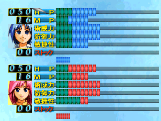
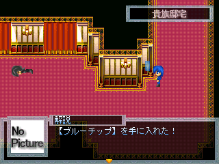
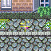

＜＜ゲームシステム解説＞＞
|
このゲームでは経験値・お金・アイテム・武器防具といったＲＰＧの基本的な概念が存在しません。
ここでは、それらの代わりとなる、このゲームの基本システムを解説します。
|
■ 成長システム |

主人公達の能力値アップは『チップ』というアイテムを振り分ける事で行われます。
アレイドは『ブルーチップ』、ティナは『レッドチップ』を振り分けます。
この振り分けはいつでも行う事ができ、自由にキャラメイキングを行う事ができます。
どう振り分ければ戦闘が有利になるのか、いろいろと考えてみてください。
|
■ チップ入手方法 |

基本的なチップ入手方法は次の３つ。
『マップ上で拾う』『敵から入手』『イベントで条件を満たす』
ここで重要なのが、このチップ、決められた数しか存在せず、全てを隙無く完璧に集められた場合のみ、主人公の能力値をＭＡＸまで上昇させる事ができます（しかし、全てを集めるのは困難であり、全てを集めなくともクリアは可能です）
○ マップ上で拾う
能力値アップの手段がチップだけな為、基本的にはわかり易い場所に落ちている事が殆どです。
しかし、ある時期になると現れる物や、その時しか拾えない物もあるので注意が必要です。
○ 敵から入手
戦闘に勝利するとチップの欠片が貰え、その欠片が１０個溜まるとチップ１個に換わります。
戦闘不能状態だと貰えませんので注意してください。
また、このゲーム、敵も限られた数しかいません。
その為、敵も隙無く全て見つけられなければ、能力値をＭＡＸにするのは不可能です。
『IndeTerminatePLUS』と同様に、このゲームでも複数の隠しボスがいます。是非、探してみてください。
○ イベントで条件を満たす
これが一番困難です。
基本的に、見つけられない事を前提にゲームバランスを取っている事もあり、かなり見つけ難くしています。
それは、行動条件であったり、選択条件であったり、予告のない時間制限であったり・・・
とにかく様々です。全て見つけられたら凄いです。
また、探して見つけられなければ、イベント自体が発生しないものも多数あります。
最初に本解説書を通読してくださいました方々の為に、一つだけ例を紹介しておきます。
オープニングイベントの出発の朝、部屋の前でティナが待っています。
この時、普通なら話し掛けてしまいますが、あえて無視して一人でエルシールに挨拶に行ってしまいます。
そうするとエルシールが『ティナ君は？』と問い返してきますので、もう一度ティナの下へ戻ります。
ティナは『よくも無視してくれたわね！』となり・・・
|
■ 思い出 |

ティナの過去の記憶が垣間見れます。
発見しなければ見ることができませんが、比較的わかり易い場所にあります。
全部で７つあります。
ゲームクリアには影響しません。
|